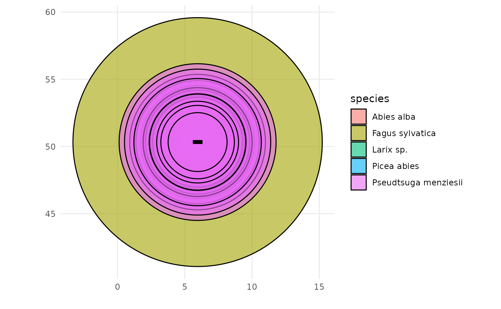
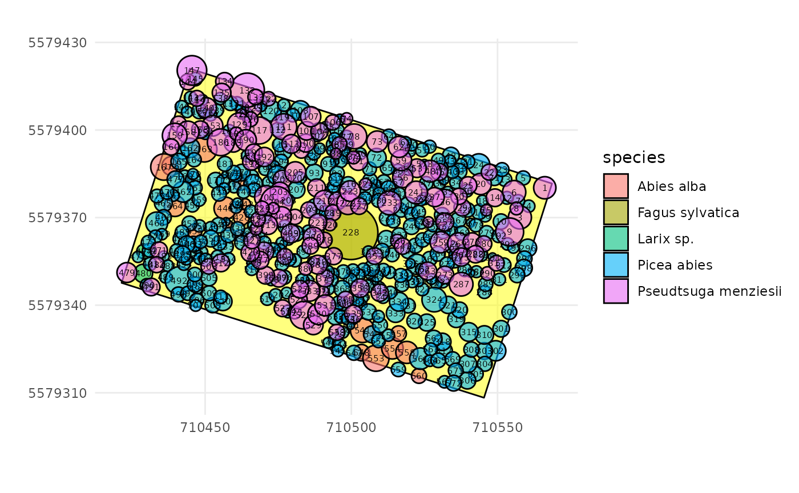
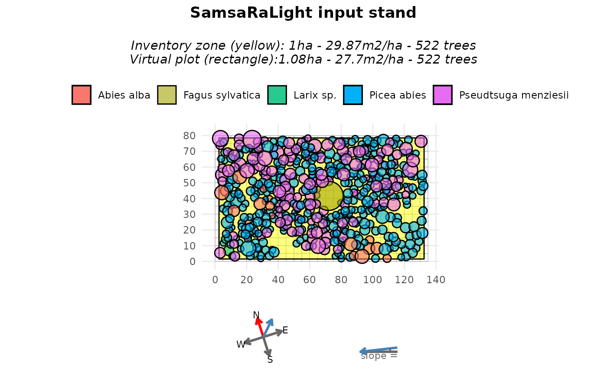
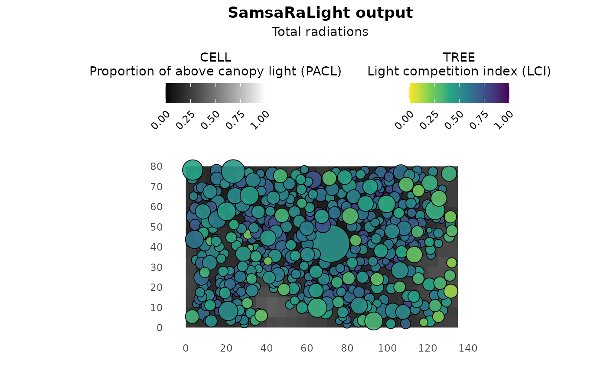

Non-axis-aligned rectangle stand from GPS data
Source:vignettes/web_only/3a-complex_cases_IRRES.Rmd
3a-complex_cases_IRRES.Rmd
library(SamsaRaLight)
library(dplyr)
#>
#> Attaching package: 'dplyr'
#> The following objects are masked from 'package:stats':
#>
#> filter, lag
#> The following objects are masked from 'package:base':
#>
#> intersect, setdiff, setequal, unionIntroduction
In previous tutorials, inventories were assumed to be defined directly in a local Cartesian coordinate system (meters). In practice, however, forest inventories are often collected with GPS data.
In this vignette, we how to convert an inventory based on GPS coordinates where tree positions are given as longitude and latitude. We will convert the geographic coordinates into planar and axis-align the inventory zone with the virtual plot axes.
Context and data
We first use the example inventory IRRES1, stored in
the package as SamsaRaLight::data_IRRES1. This inventory
was collected in Belgian Ardennes by Gauthier Ligot in the scope of the
IRRES project, which investigates the transition from even-aged to
uneven-aged forest management. The stand is dense in a sloppy terrain
and is mainly composed of Norway spruce and Douglas-fir, with a coppice
stool of beech at its center and a few silver fir and larch trees.
trees_irres <- SamsaRaLight::data_IRRES1$trees
str(trees_irres)
#> 'data.frame': 522 obs. of 14 variables:
#> $ id_tree : int 1 3 4 5 6 7 8 9 10 12 ...
#> $ species : chr "Pseudtsuga menziesii" "Pseudtsuga menziesii" "Picea abies" "Picea abies" ...
#> $ dbh_cm : num 36.5 37.3 18.7 27 31 22 17.7 33.9 33.5 21.7 ...
#> $ crown_type: chr "P" "P" "P" "P" ...
#> $ h_m : num 28.2 31.2 19.5 23.4 30.9 ...
#> $ hbase_m : num 10.42 14.44 9.99 11.38 13.04 ...
#> $ hmax_m : logi NA NA NA NA NA NA ...
#> $ rn_m : num 3.8 3.94 2.09 2.39 3.97 2.21 2.18 4.78 2.62 2.16 ...
#> $ rs_m : num 3.8 3.94 2.09 2.39 3.97 2.21 2.18 4.78 2.62 2.16 ...
#> $ re_m : num 3.8 3.94 2.09 2.39 3.97 2.21 2.18 4.78 2.62 2.16 ...
#> $ rw_m : num 3.8 3.94 2.09 2.39 3.97 2.21 2.18 4.78 2.62 2.16 ...
#> $ crown_lad : num 0.5 0.5 0.5 0.5 0.5 0.5 0.5 0.5 0.5 0.5 ...
#> $ lon : num 5.96 5.96 5.96 5.96 5.96 ...
#> $ lat : num 50.3 50.3 50.3 50.3 50.3 ...Running check_inventory() on this dataset immediately
fails, with an error indicating that columns x and
y are missing. This is expected: tree positions are
provided as longitude (lon) and latitude
(lat), expressed in degrees. To illustrate why this is
problematic, we (incorrectly) rename longitude and latitude to
x and y and attempt to plot the inventory. It
leads to a meaningless plot as angular coordinates (degrees) are
incompatible with crown dimensions expressed in meters.
SamsaRaLight::plot_inventory(
trees_irres %>% rename(x = lon, y = lat)
)
Convert the coordinates
Before creating a stand, coordinates must be converted into a planar Cartesian system with metric units. Tree coordinates can be converted from the global WGS84 reference system (EPSG:4326) to a projected coordinate system expressed in meters such as the Universal Transverse Mercator (UTM) system. It is a grid-based, metric coordinate system mapping the Earth using 60 longitudinal zones (each of them being 6-degree between 80°S and 84°N latitude), for each of the two hemispheres North and South.
The EPSG needed to convert coordinates depends on the plot
coordinates. However, the UTM zone can be automatically inferred from
the mean longitude
(
and hemisphere inferred from the mean latitude
(
if latitude is positive or
if latitude is negative). Thus, EPSG code can be automatically computed
as
.
The function SamsaRaLight::create_xy_from_lonlat() allows
to automatically convert a data.frame containing lon/lat coordinates
into planar XY coordinates determining the appropriate UTM system.
trees_irres_xy <- SamsaRaLight::create_xy_from_lonlat(trees_irres)
str(trees_irres_xy)
#> List of 2
#> $ df :'data.frame': 522 obs. of 16 variables:
#> ..$ id_tree : int [1:522] 1 3 4 5 6 7 8 9 10 12 ...
#> ..$ species : chr [1:522] "Pseudtsuga menziesii" "Pseudtsuga menziesii" "Picea abies" "Picea abies" ...
#> ..$ dbh_cm : num [1:522] 36.5 37.3 18.7 27 31 22 17.7 33.9 33.5 21.7 ...
#> ..$ crown_type: chr [1:522] "P" "P" "P" "P" ...
#> ..$ h_m : num [1:522] 28.2 31.2 19.5 23.4 30.9 ...
#> ..$ hbase_m : num [1:522] 10.42 14.44 9.99 11.38 13.04 ...
#> ..$ hmax_m : logi [1:522] NA NA NA NA NA NA ...
#> ..$ rn_m : num [1:522] 3.8 3.94 2.09 2.39 3.97 2.21 2.18 4.78 2.62 2.16 ...
#> ..$ rs_m : num [1:522] 3.8 3.94 2.09 2.39 3.97 2.21 2.18 4.78 2.62 2.16 ...
#> ..$ re_m : num [1:522] 3.8 3.94 2.09 2.39 3.97 2.21 2.18 4.78 2.62 2.16 ...
#> ..$ rw_m : num [1:522] 3.8 3.94 2.09 2.39 3.97 2.21 2.18 4.78 2.62 2.16 ...
#> ..$ crown_lad : num [1:522] 0.5 0.5 0.5 0.5 0.5 0.5 0.5 0.5 0.5 0.5 ...
#> ..$ lon : num [1:522] 5.96 5.96 5.96 5.96 5.96 ...
#> ..$ lat : num [1:522] 50.3 50.3 50.3 50.3 50.3 ...
#> ..$ x : num [1:522] 710566 710558 710561 710559 710556 ...
#> ..$ y : num [1:522] 5579380 5579370 5579374 5579384 5579379 ...
#> $ epsg: num 32631After this conversion, tree positions are expressed in meters and the inventory can now be validated and visualized correctly.
SamsaRaLight::check_inventory(trees_irres_xy$df)
#> Inventory table successfully validated.
plot_inventory(trees_irres_xy$df)
Define the inventory zone
In the IRRES1 example dataset, the trees were inventoried within a rectangular inventory zone. However, the vertices are also expressed in a lon/lat coordinate system and therefore need to be converted.
polygon_irres_xy <- SamsaRaLight::create_xy_from_lonlat(
SamsaRaLight::data_IRRES1$core_polygon
)
str(polygon_irres_xy)
#> List of 2
#> $ df :'data.frame': 4 obs. of 4 variables:
#> ..$ lon: num [1:4] 5.96 5.96 5.96 5.96
#> ..$ lat: num [1:4] 50.3 50.3 50.3 50.3
#> ..$ x : num [1:4] 710569 710545 710421 710445
#> ..$ y : num [1:4] 5579382 5579308 5579348 5579421
#> $ epsg: num 32631We can verify that the trees and the inventory polygon are both
expressed in metres within the same coordinate system. To do so, we can
use the same plot_inventory() function as above but adding
the core polygon data.frame as a second argument.
SamsaRaLight::plot_inventory(
trees_irres_xy$df,
polygon_irres_xy$df
)
We can use the function SamsaRaLight::check_polygon() to
check that the core polygon is geometrically correct and encompasses all
the inventoried trees. If it does not, the function tries to correct it
by making minimal changes, such as converting the polygon into a valid
one (e.g. if the vertices are not in the correct order) or adding a
small buffer to the polygon in an attempt to include all the trees
(e.g. if some trees are close to the border, small rounding errors can
lead to the polygon excluding them computationally). Thus, the function
returns the minimally corrected polygon and specifies this with a
message if the polygon has been modified; otherwise, it throws an
error.
polygon_irres_xy$df <- SamsaRaLight::check_polygon(
polygon_irres_xy$df,
trees_irres_xy$df
)
#> Polygon successfully validated.Create the virtual stand
Fortunately, the SamsaRaLight package allows you to provide both tree
inventory and core polygon tables with only longitude/latitude
coordinates to the create_sl_stand() function, which
automatically performs system conversions. The stand creation process
will also handle coordinate shifts into a relative coordinate system
starting at 0.
Because the projected coordinates follow a conventional GIS
orientation (Y axis pointing North), we set north2x = 90,
meaning that geographic North corresponds to the positive Y
direction.
stand_irres <- SamsaRaLight::create_sl_stand(
trees_inv = SamsaRaLight::data_IRRES1$trees,
cell_size = 5,
latitude = SamsaRaLight::data_IRRES1$info$latitude,
slope = SamsaRaLight::data_IRRES1$info$slope,
aspect = SamsaRaLight::data_IRRES1$info$aspect,
north2x = 90,
core_polygon_df = SamsaRaLight::data_IRRES1$core_polygon
)
#> `trees_inv` converted from lon/lat to planar coordinates (UTM).
#> `core_polygon_df` converted from lon/lat to planar coordinates (UTM).
#> SamsaRaLight stand successfully created.
plot(stand_irres)
The stand dimensions are chosen as the smallest grid (in number of cells) that fully contains the inventory zone:
stand_irres$geometry$n_cells_x
#> [1] 30
stand_irres$geometry$n_cells_y
#> [1] 23This corresponds to a stand size of:
stand_irres$geometry$n_cells_x * stand_irres$geometry$cell_size
#> [1] 150
stand_irres$geometry$n_cells_y * stand_irres$geometry$cell_size
#> [1] 115Then, tree coordinates are shifted to a local coordinate system starting at zero:
stand_irres$transform$shift_x
#> [1] -710420
stand_irres$transform$shift_y
#> [1] -5579307Set the axis-aligned rectangle option
At this stage, the inventory is not yet axis-aligned. This is not a
technical issue with this package, and the light computation can be run
using the virtual non-axis-aligned stand created above. However, as can
be seen in the above plot, the area surrounding the rectangular
inventory zone is empty, which could affect light interception.
Therefore, in most cases, it is preferable to work with a rectangle
aligned with the simulation axes. To do so, we have to recreate the
virtual stand by setting modify_polygon = "aarect" (for
axis-aligned rectangle), which:
- compute the minimum bounding rectangle of the inventory polygon (in this case, as our inventory zone is already a rectangle, it does not change anything),
-
rotate the entire stand (trees and polygon) so that
this rectangle becomes axis-aligned (the rotation counter-clockwise in
degrees applied to the stand is stored internally in
transform$rotation_ccw$) -
update the
north2xvalue accordingly (and can be seen in the compass of theplot()function)
stand_irres_aarect <- SamsaRaLight::create_sl_stand(
trees_inv = SamsaRaLight::data_IRRES1$trees,
cell_size = 5,
latitude = SamsaRaLight::data_IRRES1$info$latitude,
slope = SamsaRaLight::data_IRRES1$info$slope,
aspect = SamsaRaLight::data_IRRES1$info$aspect,
north2x = 90,
core_polygon_df = SamsaRaLight::data_IRRES1$core_polygon,
modify_polygon = "aarect"
)
#> `trees_inv` converted from lon/lat to planar coordinates (UTM).
#> `core_polygon_df` converted from lon/lat to planar coordinates (UTM).
#> SamsaRaLight stand successfully created.
plot(stand_irres_aarect)
As we can see, rotating the stand results in a rectangular inventory zone (shown in yellow) that may not cover the entire virtual stand area. This creates empty spaces around the borders of the virtual stand and reduces the total basal area per hectare (due to a larger area with the same number of trees). This could slightly bias the light computation, even though the small empty areas on the borders could be negligible for tree light interception. This can also be avoided by:
- Setting the cell size to a smaller value to reduce the empty space, which would result in much higher computation time.
- Alternatively, the rectangle could be set up without being axis-aligned and the ‘fill_around’ argument could be used. This will be explained in the second and third examples of this tutorial and involves filling around the inventory zone with virtual trees, but introduces stochasticity to the stand virtualisation.
Run SamsaraLight
As shown in the previous tutorials, monthly radiation data are retrieved using the geographic location of the stand.
data_radiations_irres <- SamsaRaLight::get_monthly_radiations(
latitude = SamsaRaLight::data_IRRES1$info$latitude,
longitude = SamsaRaLight::data_IRRES1$info$longitude
)And the simulation is run using run_sl() (here run with
the axis-aligned inventory zone).
output_irres_aarect <- SamsaRaLight::run_sl(
sl_stand = stand_irres_aarect,
monthly_radiations = data_radiations_irres
)
#> parallel mode disabled because OpenMP was not available
#> SamsaRaLight simulation was run successfully.
plot(output_irres_aarect)